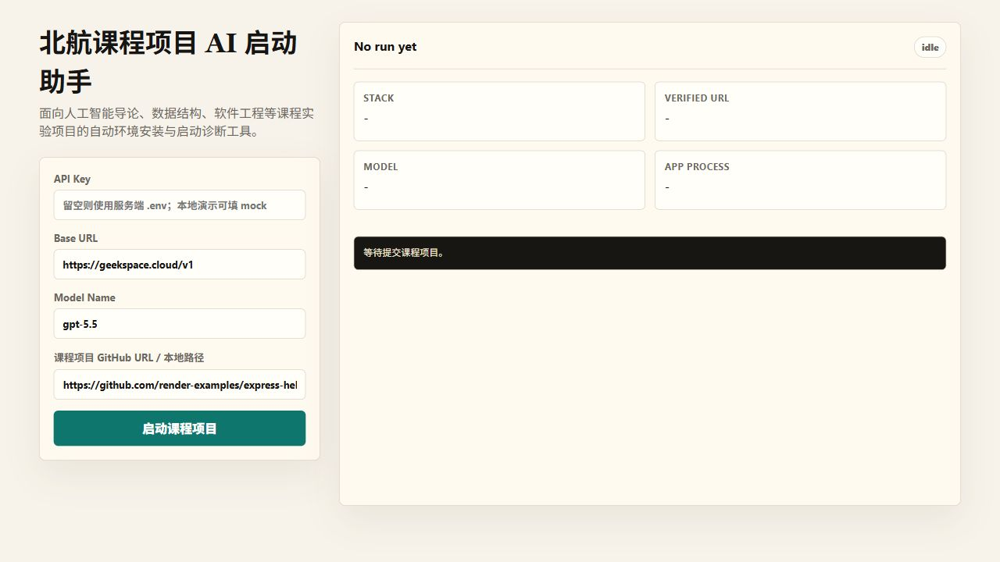
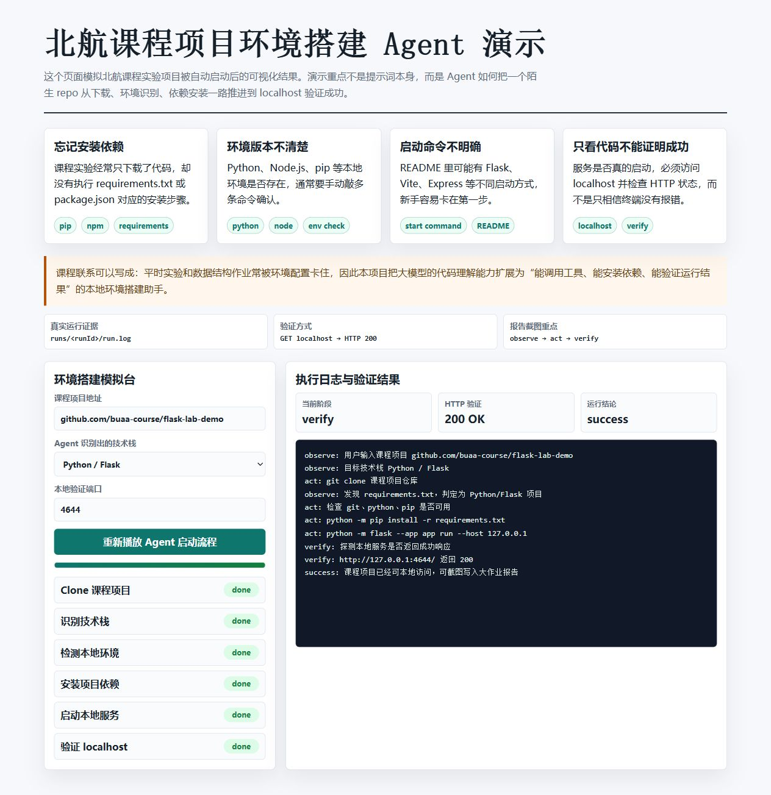

解决的问题
课程实验中常见问题不是代码不会写，而是依赖没装、解释器不对、启动命令不明确、服务是否成功无法确认。
课程实验中常见问题不是代码不会写，而是依赖没装、解释器不对、启动命令不明确、服务是否成功无法确认。
系统记录 observe → think → act → verify 的完整过程，每一步都进入日志和结构化结果。
命令通过 allowlist 执行，只允许 git、node、npm、python、pip 等 MVP 必要命令。
最终成功标准不是终端无报错，而是访问 localhost 并获得 HTTP 200。
| 验证项 | 结果 |
|---|---|
| clone repo | success |
| stack detect | Python / Flask |
| dependency install | success |
| app start | success |
| localhost verification | HTTP 200 |
[observe] start run
[act] git clone ...
[act] python -m pip install -r requirements.txt
[act] python -m flask --app app run --host 127.0.0.1 --port 4644
[verify] run success

npm start
node src/cli.js --api-key mock --base-url mock --model-name mock --repo-url test-fixtures/buaa-ai-course-demo真实 API key 通过本地 .env 配置，不进入展示页，也不提交到公开仓库。